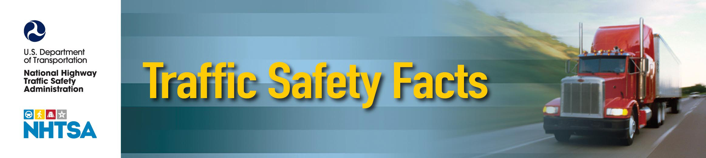
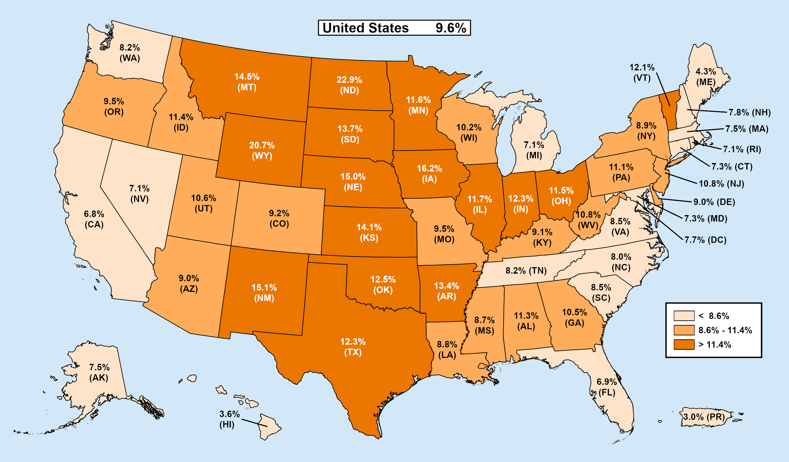

Large Trucks: 2022 Data
1
2022 Data
DOT HS 813 588
July 2024
Large Trucks
A large truck as defined in this fact sheet is any medium or heavy truck,
In this fact sheet for 2022
excluding buses and motor homes, with a gross vehicle weight rating (GVWR)
the information is
greater than 10,000 pounds. These large trucks include both commercial and
presented as follows.
non-commercial vehicles.
• Overview
Key Findings
• Crash Characteristics
• In 2022 there were 5,936 people killed in traffic crashes involving large
• Drivers
trucks. This was a 2-percent increase from 5,821 in 2021.
• State
• Seventy percent of people killed in large-truck traffic crashes in 2022 were
occupants of other vehicles.
• Seventy-six percent of the fatal traffic crashes involving large trucks in 2022
occurred on weekdays (6 a.m. Monday to 5:59 p.m. Friday).
• Three percent of drivers of large trucks involved in fatal traffic crashes in
2022 had blood alcohol concentrations (BACs) of .08 grams per deciliter
(g/dL) or higher, much lower than drivers of other vehicle types (28% for
motorcycles, 25% for passenger cars, and 21% for light trucks).
• Drivers of large trucks involved in fatal traffic crashes in 2022 had a higher
percentage (20.8%) of previously recorded crashes compared to drivers of
other vehicle types (motorcycles, 18.9%; passenger cars, 17.8%; and light
trucks, 15.9%).
• In 2022 drivers of large trucks in fatal traffic crashes were less likely (6.0%)
to have previous license suspensions or revocations than other vehicle types
(motorcycles, 16.3%; passenger cars, 12.9%; and light trucks, 10.1%).
This fact sheet contains information on fatal motor vehicle traffic crashes based
on data from the Fatality Analysis Reporting System (FARS) and non-fatal
motor vehicle traffic crashes from the National Automotive Sampling System
(NASS) General Estimates System (GES) and Crash Report Sampling System
(CRSS). Results from FARS, such as fatal crashes and fatalities, are actual
counts, while results from NASS GES and CRSS, such as non-fatal crashes and
people injured, are estimates. Refer to the end of this publication for more
information on FARS, NASS GES, and CRSS.
Due to a vehicle classification change, the 2020 and later-year vehicle type
classifications are not comparable to 2019 and earlier-year vehicle type
classifications. This change affects any analysis with a vehicle component to it.
Refer to the end of this publication for more information on Product Information
Catalog and Vehicle Listing (vPIC).
U.S. Department of Transportation
NHTSA’s National Center for Statistics and Analysis
1200 New Jersey Avenue SE, Washington, DC 20590
Large Trucks: 2022 Data
2
A motor vehicle traffic crash is defined as an incident that involved one or more motor vehicles in-transport that
originated on or had a harmful event (injury or damage) on a public trafficway, such as a road or highway.
Crashes that occurred on private property not regularly used by the public for transport, including some parts of
parking lots and driveways, are excluded. The terms “motor vehicle traffic crash” and “traffic crash” are used
interchangeably in this document.
Overview
In 2022 there were 5,936 people killed and an estimated 160,608 people injured in traffic crashes involving large
trucks. An estimated 536,424 large trucks were involved in police-reported traffic crashes nationwide during
2022. Table 1 shows a majority (71%) of the large trucks involved in fatal crashes were heavy trucks in 2022
(GVWR > 26,000 lbs.).
Table 1. Large Trucks Involved in Fatal Traffic Crashes, by GVWR, 2020–2022
Medium Trucks
Heavy Trucks
(10,001 lbs. - 26,000 lbs.)
(> 26,000 lbs.)
Other/Unknown
Total
Year
Number
Percent
Number
Percent
Number
Percent
Number
Percent
2020
1,297
27%
3,519
73%
5
0%
4,821
100%
2021
1,603
28%
4,099
71%
31
1%
5,733
100%
2022
1,673
29%
4,143
71%
21
0%
5,837
100%
Sources: FARS 2020–2021 Final File, 2022 Annual Report File (ARF)
Table 2 provides an overview of people killed and injured in traffic crashes involving large trucks from 2013 to 2022.
Fatalities in traffic crashes involving large trucks increased by 2 percent from 2021 to 2022. Of the fatalities in 2022:
• 70 percent (4,167) were occupants of other vehicles;
• 18 percent (1,097) were occupants of large trucks; and
• 11 percent (672) were nonoccupants (pedestrians, pedalcyclists, or other nonoccupants).
From 2021 to 2022 there was a 9-percent increase in the number of large-truck occupants killed, a 6-percent
increase in the number of nonoccupants killed, and a less than 1 percent decrease in the number of occupants of
other vehicles killed in traffic crashes involving large trucks.
Estimates of people injured in traffic crashes involving large trucks increased by 4 percent from 2021 to 2022. Of
the people injured in 2022:
• 72 percent (115,201) were occupants of other vehicles;
• 26 percent (41,874) were occupants of large trucks; and
• 2 percent (3,534) were nonoccupants.
From 2021 to 2022 there was a 24-percent increase in the number of nonoccupants injured, a 5-percent increase in the
number of occupants of other vehicles injured, and a 1-percent decrease in the number of large-truck occupants injured
in traffic crashes involving large trucks.
U.S. Department of Transportation
NHTSA’s National Center for Statistics and Analysis
1200 New Jersey Avenue SE, Washington, DC 20590
Large Trucks: 2022 Data
3
Table 2. People Killed and Injured in Traffic Crashes Involving Large Trucks, by Person Type
and Crash Type, 2013–2022
Large-Truck Occupants by Crash Type
Other People
Occupants of
Single-Vehicle Multi-Vehicle
Total
Other Vehicles Nonoccupants
Total
Year Number Percent Number Percent Number Percent Number Percent Number Percent Number Percent Total
Killed
2013
431
11%
264
7%
695 17%
2,845
71%
441
11%
3,286
83%
3,981
2014
405
10%
251
6%
656 17%
2,859
73%
393
10%
3,252
83%
3,908
2015
395
10%
270
7%
665 16%
3,017
74%
413
10%
3,430
84%
4,095
2016
520
11%
295
6%
815 17%
3,351
72%
512
11%
3,863
83%
4,678
2017
525
11%
353
7%
878 18%
3,535
72%
493
10%
4,028
82%
4,906
2018
538
11%
352
7%
890 18%
3,563
71%
553
11%
4,116
82%
5,006
2019
494
10%
399
8%
893 18%
3,569
71%
570
11%
4,139
82%
5,032
2020
504
10%
318
6%
822 17%
3,501
71%
622
13%
4,123
83%
4,945
2021
584
10%
427
7%
1,011 17%
4,176
72%
634
11%
4,810
83%
5,821
2022
613
10%
484
8%
1,097 18%
4,167
70%
672
11%
4,839
82%
5,936
Injured
2013 8,949
9% 15,673 16% 24,621 26%
69,221 72%
2,254
2%
71,476 74%
96,097
2014 10,280
9% 16,865 15% 27,146 24%
82,282 74%
2,389
2%
84,671 76% 111,817
2015 10,175
9% 19,927 17% 30,102 26%
85,172 72%
2,561
2%
87,733 74% 117,835
2016† 12,941 10% 23,241 17% 36,183 27%
94,958 70%
3,587
3%
98,545 73% 134,727
2017† 14,550 10% 25,442 17% 39,992 27% 105,509 71%
2,808
2% 108,317 73% 148,309
2018† 13,480
9% 25,719 17% 39,200 26% 108,490 72%
3,480
2% 111,970 74% 151,170
2019† 15,199 10% 30,490 19% 45,688 29% 109,515 69%
4,156
3% 113,670 71% 159,359
2020† 14,969 11% 26,597 19% 41,566 29%
97,595 69%
2,452
2% 100,048 71% 141,613
2021† 13,823
9% 28,346 18% 42,169 27% 109,795 71%
2,849
2% 112,644 73% 154,813
2022† 17,161 11% 24,713 15% 41,874 26% 115,201 72%
3,534
2% 118,735 74% 160,608
Sources: FARS 2013–2021 Final File, 2022 ARF; NASS GES 2013–2015; CRSS 2016–2022
†CRSS estimates and NASS GES estimates are not comparable due to different sample designs. Refer to end of document for more
information about CRSS.
Note: Due to a vehicle classification change, the 2020 and later year data are not comparable to 2019 and earlier years.
In 2022 large trucks accounted for 10 percent of all vehicles involved in fatal traffic crashes and 5 percent of all
vehicles involved in injury and property-damage-only traffic crashes. Large trucks accounted for 5 percent of all
registered vehicles and 10 percent of the total vehicle miles traveled (VMT) in 2022. In comparison, passenger
vehicles (passenger cars, SUVs, pickup trucks, and vans) accounted for 92 percent of all registered vehicles and
88 percent of the total VMT in 2022.
Table 3 summarizes the number of large trucks involved in fatal and injury traffic crashes, the number of
registered large trucks, involvement rates for every 100,000 registered large trucks, large-truck VMT, and the
involvement rates for every 100 million large-truck VMT from 2013 to 2022.
U.S. Department of Transportation
NHTSA’s National Center for Statistics and Analysis
1200 New Jersey Avenue SE, Washington, DC 20590
Large Trucks: 2022 Data
4
Table 3. Large Trucks Involved in Fatal and Injury Traffic Crashes, and Involvement Rates, 2013–2022
Involvement Rate per
Number of Large
Number of Large
100,000 Registered
Large-Truck Involvement Rate per 100
Year Trucks Involved Trucks Registered
Large Trucks
VMT (millions) Million Large-Truck VMT
Fatal Traffic Crashes
2013
3,921
10,597,356
37.00
275,017
1.43
2014
3,749
10,905,956
34.38
279,132
1.34
2015
4,075
11,203,184
36.37
279,844
1.46
2016
4,562
11,498,561
39.67
287,895
1.58
2017
4,805
12,229,216
39.29
297,593
1.61
2018
4,909
13,233,910
37.09
304,864
1.61
2019
5,033
13,085,643
38.46
300,050
1.68
2020
4,821
12,899,372
37.37
297,649
1.62
2021
5,733
13,856,404
41.37
327,026
1.75
2022
5,837
14,333,821
40.72
331,272
1.76
Injury Traffic Crashes
2013
73,089
10,597,356
690
275,017
27
2014
88,473
10,905,956
811
279,132
32
2015
87,307
11,203,184
779
279,844
31
2016†
102,080
11,498,561
888
287,895
35
2017†
106,733
12,229,216
873
297,593
36
2018†
112,253
13,233,910
848
304,864
37
2019†
118,527
13,085,643
906
300,050
40
2020†
104,741
12,899,372
812
297,649
35
2021†
117,210
13,856,404
846
327,026
36
2022†
120,190
14,333,821
839
331,272
36
Sources: FARS 2013–2021 Final File, 2022 ARF; NASS GES 2013–2015; CRSS 2016–2022; VMT and Registered Vehicles - Federal
Highway Administration
†CRSS estimates and NASS GES estimates are not comparable due to different sample designs. Refer to end of document for more
information about CRSS.
Note: Due to a vehicle classification change, the 2020 and later year data are not comparable to 2019 and earlier years.
Crash Characteristics
In 2022 large trucks were more likely to be involved in fatal multi-vehicle traffic crashes as opposed to fatal
single-vehicle crashes than were passenger vehicles. Eighty-one percent of large trucks involved in fatal traffic
crashes were in multi-vehicle crashes, compared with 63 percent for passenger vehicles in 2022.
Table 4 presents percentages of two-vehicle fatal traffic crashes involving large trucks by initial impact point of
the large truck and the other vehicle (excluding large trucks) in 2022. The large truck and the other vehicle
impacted each other on the front 32.5 percent of the time. The large trucks were impacted from the rear 3 times
more often than the other vehicles (21.2% and 6.9%).
Table 4. Percentages of Two-Vehicle Fatal Traffic Crashes Involving Large Trucks, by Initial
Impact Point, 2022
Impact Point on Other Vehicle
Impact Point on Large Truck
Front
Left Side
Right Side
Rear
Total
Front
32.5%
12.8%
10.1%
6.8%
62.1%
Left Side
8.6%
0.9%
0.5%
<0.1%
10.0%
Right Side
5.8%
0.8%
0.1%
<0.1%
6.7%
Rear
20.4%
0.5%
0.3%
<0.1%
21.2%
Total
67.2%
14.9%
10.9%
6.9%
100.0%
Source: FARS 2022 ARF
Notes: Excludes two-vehicle traffic crashes involving two large trucks. Totals may not equal sum of components due to independent rounding.
U.S. Department of Transportation
NHTSA’s National Center for Statistics and Analysis
1200 New Jersey Avenue SE, Washington, DC 20590
Large Trucks: 2022 Data
5
According to Table 5, both the large truck and the other vehicle (excluding large trucks) were proceeding straight
at the time of the traffic crash in 41.0 percent of the two-vehicle fatal traffic crashes. In 9.2 percent of these two-
vehicle traffic crashes, the other vehicle was turning left regardless of the large-truck maneuver. In 9.8 percent of
these traffic crashes the truck and the other vehicle were both negotiating a curve. In 6.0 percent of the two-
vehicle fatal traffic crashes, the large truck was stopped in road regardless of the maneuver of the other vehicle.
Table 5. Percentages of Vehicle Maneuvers in Two-Vehicle Fatal Traffic Crashes Involving a
Large Truck, by Maneuver of the Large Truck and Maneuver of the Other Vehicle, 2022
Vehicle Maneuver of the Other Vehicle
Vehicle Maneuver
Going
Stopped in Turning
Turning Negotiating Other/Unknown
of the Large Truck
Straight
Road
Right
Left
a Curve
Maneuver
Total
Going Straight
41.0%
2.1%
0.6%
7.8%
0.7%
9.2%
61.5%
Stopped in Road
4.9%
0.0%
0.0%
0.0%
0.2%
0.8%
6.0%
Turning Right
0.9%
<0.1%
<0.1%
0.0%
0.1%
0.3%
1.4%
Turning Left
7.0%
0.0%
<0.1%
0.1%
0.4%
1.0%
8.5%
Negotiating a Curve
0.9%
0.2%
<0.1%
1.0%
9.8%
1.1%
13.0%
Other/Unknown Maneuver
7.8%
0.1%
0.0%
0.3%
0.5%
1.0%
9.7%
Total
62.5%
2.5%
0.7%
9.2%
11.8%
13.4%
100.0%
Source: FARS 2022 ARF
Notes: Excludes two-vehicle traffic crashes involving two large trucks. Totals may not equal sum of components due to independent rounding.
Figure 1 shows the percentages of fatal traffic crashes involving large trucks by roadway, rural/urban
classification, work zone, day of the week (weekday/weekend), and time of day (nighttime/daytime) in 2022.
• Twenty-seven percent of fatal traffic crashes involving large trucks occurred on interstates.
• Fifty-four percent of fatal traffic crashes involving large trucks occurred in rural areas.
• Only 5 percent of fatal traffic crashes involving large trucks occurred in work zones.
• Seventy-six percent of the fatal traffic crashes involving large trucks occurred on weekdays.
• Of those fatal traffic crashes involving large trucks during weekdays, 70 percent occurred during daytime
from 6 a.m. to 5:59 p.m.
U.S. Department of Transportation
NHTSA’s National Center for Statistics and Analysis
1200 New Jersey Avenue SE, Washington, DC 20590
Large Trucks: 2022 Data
6
Figure 1. Percentages of Fatal Traffic Crashes Involving Large Trucks in Relation to Roadway,
Rural/Urban Classification, Work Zone, Day of Week and Time of Day, 2022
Roadway
Rural/Urban Classification
Work Zone
Yes
5%
Interstate
27%
Urban
Rural
46%
54%
Non-Interstate
No
73%
95%
100%
100%
90%
90%
76%
80%
80%
70%
70%
67%
70%
61%
60%
60%
50%
50%
39%
40%
40%
33%
30%
30%
24%
30%
20%
20%
10%
10%
0%
0%
Weekday Weekend
Daytime Nighttime
Daytime Nighttime
Daytime Nighttime
Day of Week
Time of Day
Weekday
Weekend
Source: FARS 2022 ARF
Note: Unknowns were removed before calculating percentages.
Weekday – Monday 6 a.m. to Friday 5:59 p.m. (4.5 days)
Weekend – Friday 6 p.m. to Monday 5:59 a.m. (2.5 days)
Daytime – 6 a.m. to 5:59 p.m.
Nighttime – 6 p.m. to 5:59 a.m.
Drivers
Drivers are considered to be alcohol-impaired when their BACs are .08 g/dL or higher. All 50 States, the District
of Columbia, and Puerto Rico have set a threshold making it illegal to drive with a BAC of .08 g/dL or higher.
Operating a commercial vehicle at a BAC of .04 g/dL or above is a violation of Federal regulations and may result
in criminal charges.
Figure 2 displays the proportions of alcohol-impaired drivers in fatal traffic crashes by vehicle types (large trucks,
passenger cars, light trucks, and motorcycles) over the 10-year period 2013 to 2022. The percentage of drivers of
large trucks involved in fatal traffic crashes who were alcohol-impaired was 3 percent in 2022. For drivers of
other types of vehicles involved in fatal traffic crashes in 2022, the percentages of alcohol-impaired drivers were
28 percent for motorcycles, 25 percent for passenger cars, and 21 percent for light trucks.
U.S. Department of Transportation
NHTSA’s National Center for Statistics and Analysis
1200 New Jersey Avenue SE, Washington, DC 20590
Large Trucks: 2022 Data
7
Figure 2. Estimated Proportions of Alcohol-Impaired Drivers in Fatal Traffic Crashes, by Vehicle
Type, 2013–2022
Motorcycles
Passenger Cars
Light Trucks
Large Trucks
35%
30%
25%
20%
15%
10%
5%
0%
2013
2014
2015
2016
2017
2018
2019
2020
2021
2022
Source: FARS 2013–2021 Final File, FARS 2022 ARF
Notes: Due to a vehicle classification change, the 2020 and later year data are not comparable to 2019 and earlier years. Starting in 2022,
motorcyclists no longer include people on motorized bicycles. NHTSA estimates BACs when alcohol test results are unknown.
Figure 3 presents the percentages of drivers involved in fatal traffic crashes who had previous driving records
(recorded crashes, DWI convictions, speeding convictions, and recorded suspensions or revocations) within 5
years from the time of the crash, by vehicle types in 2022.
• Large-truck drivers had a higher percentage (20.8%) of previously recorded traffic crashes compared to
drivers of other vehicle types (motorcycles, 18.9%; passenger cars, 17.8%; and light trucks, 15.9%).
• Large-truck drivers had the lowest percentage (0.8%) of previous DWI convictions compared to drivers
of other vehicle types (motorcycles, 3.7%; passenger cars, 3.0%; and light trucks, 2.8%).
• Large-truck drivers had the second highest percentage (17.6%) of at least one prior speeding conviction
compared to motorcycle drivers (21.6%) who had the highest.
• Drivers of large trucks in fatal traffic crashes were less likely (6.0%) to have previous license suspensions or
revocations than other vehicle types (motorcycles, 16.3%; passenger cars, 12.9%; and light trucks, 10.1%).
Figure 3. Percentages of Previous 5-Year Driving Records of Drivers Involved in Fatal Traffic
Crashes, by Vehicle Type, 2022
Motorcycles
Passenger Cars
Light Trucks
Large Trucks
35%
30%
25%
21.6%
20.8%
18.9%
20%
17.8%
17.6%
17.6%
15.9%
16.3%
15.4%
15%
12.9%10.1%
10%
6.0%
3.7%
5%
3.0% 2.8% 0.8%
0%
Recorded Crashes
DWI Convictions
Speeding Convictions
Recorded Suspensions or
Revocations
Source: FARS 2022 ARF
Note: Excludes all drivers with previous records that were unknown.
U.S. Department of Transportation
NHTSA’s National Center for Statistics and Analysis
1200 New Jersey Avenue SE, Washington, DC 20590

Large Trucks: 2022 Data
8
State
Figure 4 displays the percentage of large trucks involved in fatal traffic crashes by State. Table 6 presents the
large-truck involvement in fatal traffic crashes in 2022 for the 50 States, the District of Columbia, and Puerto
Rico. Puerto Rico is not included in the overall U.S. total.
• On average nationwide, 9.6 percent of all vehicles involved in fatal traffic crashes were large trucks.
• The percentages of large trucks involved in fatal traffic crashes, as a proportion of all vehicles, ranged
from 3.6 percent in Hawaii to 22.9 percent in North Dakota between the 50 States.
• The percentages of large trucks involved in fatal traffic crashes were 10 percent or higher in 24 States.
• Texas had the highest number of large trucks involved in fatal traffic crashes at 782, and the largest
number of total vehicles involved in fatal traffic crashes at 6,340.
• The States with higher percentages of large trucks involved in fatal traffic crashes are located in the
middle of the country.
Table 7 shows the number of people killed in large-truck traffic crashes for each of the 50 States, the District of
Columbia, and Puerto Rico, by person type in 2022. Puerto Rico is not included in the overall U.S. total.
• The highest number of large-truck occupants killed was 173 in Texas, followed by 64 in Georgia.
• The number of occupants of other vehicles killed ranged from 0 in the District of Columbia to 552 in
Texas. Twelve States each had more than 100 occupants of other vehicles killed in large-truck traffic
crashes.
• Texas had the highest number of nonoccupants killed in large-truck traffic crashes at 85. Two other States
(California and Florida) had more than 60 nonoccupants killed in large-truck traffic crashes.
Figure 4. Large Trucks Involved, as Percentages of Total Vehicles in Fatal Traffic Crashes, by
State, 2022
Source: FARS 2022 ARF
U.S. Department of Transportation
NHTSA’s National Center for Statistics and Analysis
1200 New Jersey Avenue SE, Washington, DC 20590
Large Trucks: 2022 Data
9
Table 6. Large Trucks Involved in Fatal Traffic Crashes, by State, 2022
Large Trucks Involved in Fatal Traffic Crashes
Total Vehicles Involved
Percentage of
Percentage of U.S. Total
State
in Fatal Traffic Crashes
Number
Total Vehicles
for Large Trucks
Alabama
1,406
159
11.3%
2.7%
Alaska
120
9
7.5%
0.2%
Arizona
1,822
164
9.0%
2.8%
Arkansas
919
123
13.4%
2.1%
California
6,214
421
6.8%
7.2%
Colorado
1,090
100
9.2%
1.7%
Connecticut
508
37
7.3%
0.6%
Delaware
234
21
9.0%
0.4%
District of Columbia
39
3
7.7%
0.1%
Florida
5,208
360
6.9%
6.2%
Georgia
2,524
264
10.5%
4.5%
Hawaii
165
6
3.6%
0.1%
Idaho
306
35
11.4%
0.6%
Illinois
1,853
217
11.7%
3.7%
Indiana
1,407
173
12.3%
3.0%
Iowa
463
75
16.2%
1.3%
Kansas
538
76
14.1%
1.3%
Kentucky
1,070
97
9.1%
1.7%
Louisiana
1,244
110
8.8%
1.9%
Maine
253
11
4.3%
0.2%
Maryland
832
61
7.3%
1.0%
Massachusetts
597
45
7.5%
0.8%
Michigan
1,630
116
7.1%
2.0%
Minnesota
646
75
11.6%
1.3%
Mississippi
957
83
8.7%
1.4%
Missouri
1,491
141
9.5%
2.4%
Montana
255
37
14.5%
0.6%
Nebraska
367
55
15.0%
0.9%
Nevada
588
42
7.1%
0.7%
New Hampshire
206
16
7.8%
0.3%
New Jersey
1,038
112
10.8%
1.9%
New Mexico
656
99
15.1%
1.7%
New York
1,606
143
8.9%
2.4%
North Carolina
2,274
182
8.0%
3.1%
North Dakota
153
35
22.9%
0.6%
Ohio
1,906
219
11.5%
3.8%
Oklahoma
1,006
126
12.5%
2.2%
Oregon
819
78
9.5%
1.3%
Pennsylvania
1,683
186
11.1%
3.2%
Rhode Island
70
5
7.1%
0.1%
South Carolina
1,535
131
8.5%
2.2%
South Dakota
190
26
13.7%
0.4%
Tennessee
1,880
155
8.2%
2.7%
Texas
6,340
782
12.3%
13.4%
Utah
473
50
10.6%
0.9%
Vermont
107
13
12.1%
0.2%
Virginia
1,415
120
8.5%
2.1%
Washington
1,047
86
8.2%
1.5%
West Virginia
353
38
10.8%
0.7%
Wisconsin
834
85
10.2%
1.5%
Wyoming
164
34
20.7%
0.6%
U.S. Total
60,501
5,837
9.6%
100.0%
Puerto Rico
369
11
3.0%
-
Source: FARS 2022 ARF
Note: Percentages may not equal sum of components due to independent rounding.
U.S. Department of Transportation
NHTSA’s National Center for Statistics and Analysis
1200 New Jersey Avenue SE, Washington, DC 20590
Large Trucks: 2022 Data
10
Table 7. Fatalities in Traffic Crashes Involving Large Trucks, by State and Person Type, 2022
Large-Truck Occupants by Crash Type
Other People
Single-
Multi-
Occupants of
State
Vehicle
Vehicle
Total
Other Vehicles Nonoccupants
Total
Total
Alabama
23
9
32
113
11
124
156
Alaska
0
1
1
7
1
8
9
Arizona
12
16
28
121
24
145
173
Arkansas
11
12
23
71
15
86
109
California
19
22
41
319
76
395
436
Colorado
15
5
20
80
7
87
107
Connecticut
4
3
7
27
4
31
38
Delaware
2
0
2
20
1
21
23
District of Columbia
1
0
1
0
2
2
3
Florida
29
23
52
255
61
316
368
Georgia
31
33
64
166
35
201
265
Hawaii
2
0
2
2
2
4
6
Idaho
2
4
6
28
2
30
36
Illinois
12
19
31
166
21
187
218
Indiana
19
7
26
132
14
146
172
Iowa
11
5
16
60
1
61
77
Kansas
12
11
23
56
3
59
82
Kentucky
13
6
19
69
8
77
96
Louisiana
13
6
19
79
16
95
114
Maine
0
1
1
8
1
9
10
Maryland
7
0
7
46
6
52
59
Massachusetts
2
1
3
36
7
43
46
Michigan
5
6
11
93
11
104
115
Minnesota
4
7
11
59
6
65
76
Mississippi
11
5
16
62
9
71
87
Missouri
24
11
35
95
16
111
146
Montana
4
4
8
29
4
33
41
Nebraska
8
10
18
36
3
39
57
Nevada
9
2
11
29
5
34
45
New Hampshire
3
1
4
12
1
13
17
New Jersey
11
7
18
72
18
90
108
New Mexico
7
13
20
65
6
71
91
New York
14
8
22
88
36
124
146
North Carolina
27
15
42
132
19
151
193
North Dakota
3
5
8
23
0
23
31
Ohio
15
13
28
164
21
185
213
Oklahoma
15
11
26
96
14
110
136
Oregon
8
3
11
60
16
76
87
Pennsylvania
26
21
47
119
19
138
185
Rhode Island
0
1
1
3
1
4
5
South Carolina
11
7
18
97
11
108
126
South Dakota
4
5
9
17
3
20
29
Tennessee
23
12
35
109
10
119
154
Texas
81
92
173
552
85
637
810
Utah
11
0
11
33
7
40
51
Vermont
5
0
5
8
0
8
13
Virginia
12
12
24
90
12
102
126
Washington
8
11
19
52
14
66
85
West Virginia
8
1
9
29
0
29
38
Wisconsin
11
9
20
68
4
72
92
Wyoming
5
8
13
14
3
17
30
U.S. Total
613
484
1,097
4,167
672
4,839
5,936
Puerto Rico
2
1
3
7
1
8
11
Source: FARS 2022 ARF
U.S. Department of Transportation
NHTSA’s National Center for Statistics and Analysis
1200 New Jersey Avenue SE, Washington, DC 20590
Large Trucks: 2022 Data
11
Fatality Analysis Reporting System
FARS contains data on every fatal motor vehicle traffic crash within the 50 States, the District of Columbia, and
Puerto Rico. To be included in FARS, a traffic crash must involve a motor vehicle traveling on a trafficway
customarily open to the public and must result in the death of a vehicle occupant or a nonoccupant within 30
days of the crash. The Annual Report File (ARF) is the FARS data file associated with the most recent available
year, which is subject to change when it is finalized the following year to the final version known as the Final
File. The additional time between the ARF and the Final File provides the opportunity for submission of
important variable data requiring outside sources, which may lead to changes in the final counts. More
information on FARS can be found at www.nhtsa.gov/crash-data-systems/fatality-analysis-reporting-system.
The updated final counts for the previous data year will be reflected with the release of the recent year’s ARF.
For example, along with the release of the 2022 ARF, the 2021 Final File was released to replace the 2021
ARF. The final fatality count in motor vehicle traffic crashes for 2021 was 43,230, which was updated from
42,939 in the 2021 ARF. The number of fatalities involving large trucks from the 2021 Final File was 5,821,
which was updated from 5,788 from the 2021 ARF.
Crash Report Sampling System
NHTSA’s National Center for Statistics and Analysis (NCSA) redesigned the nationally representative sample
of police-reported traffic crashes, which estimates the number of police-reported injury and property-damage-
only crashes in the United States. CRSS replaced the National Automotive Sampling System (NASS) General
Estimates System (GES) in 2016. More information on CRSS can be found at www.nhtsa.gov/crash-data-
systems/crash-report-sampling-system-crss.
Important Change for Motorized Bicycles
Prior to 2022, motorized bicycles were collected as motor vehicles and classified as motorcycles in FARS and
CRSS, and their operators and passengers were captured as motorists. Beginning in 2022, FARS and CRSS are
no longer collecting motorized bicycles as motor vehicles. Consequently, operators and passengers of motorized
bicycles will be captured as pedalcyclists when involved in a motor vehicle traffic crash. Any traffic crash
involving only motorized bicycle(s) will no longer be captured in FARS or CRSS.
Product Information Catalog and Vehicle Listing (vPIC) Vehicle Classification
Historically, vehicle type classifications (e.g., passenger cars, light trucks, large trucks, motorcycles, buses)
from FARS, NASS GES, and CRSS used for analysis and data reporting were based on analyst-coded vehicle
body type. NHTSA did not have manufacturer authoritative data to assist in vehicle body type coding. NCSA
has developed a Product Information Catalog and Vehicle Listing (vPIC) dataset that is being used to decode
VINs (Vehicle Identification Numbers) and extract vehicle information. Details of vehicles (make, model, body
class, etc.) involved in crashes are obtained from vPIC via VIN-linkage. The VIN-derived information from
vPIC uses the manufacturer’s classification of body class, which allows for more accurate vehicle type analysis.
The vPIC-based analysis data are available beginning with 2020 FARS and CRSS data files. Vehicle-related
analysis for 2020 and later years are based on vPIC vehicle classification. As a result, the 2020 and later-year
vehicle type classifications are not comparable to 2019 and earlier-year vehicle type classifications. This change
affects any analysis with a vehicle component to it. More information on vPIC can be found at
https://vpic.nhtsa.dot.gov/.
U.S. Department of Transportation
NHTSA’s National Center for Statistics and Analysis
1200 New Jersey Avenue SE, Washington, DC 20590

Large Trucks: 2022 Data
12
The suggested APA format citation for this document is:
National Center for Statistics and Analysis. (2024, July). Large trucks: 2022 data (Traffic Safety Facts. Report
No. DOT HS 813 588). National Highway Traffic Safety Administration.
For More Information:
Motor vehicle traffic crash data are available from the National Center for Statistics and Analysis (NCSA),
NSA-230. NCSA can be contacted at NCSARequests@dot.gov or 800-934-8517. NCSA programs can be
found at www.nhtsa.gov/data. To report a motor vehicle safety-related problem or to inquire about safety
information, contact the Vehicle Safety Hotline at 888-327-4236 or www.nhtsa.gov/report-a-safety-problem.
The following data tools and resources can be found at https://cdan.dot.gov/.
• Fatal Motor Vehicle Traffic Crash Data Visualizations
• Motor Vehicle Traffic Crash Databook
• Fatality and Injury Reporting System Tool (FIRST)
• State Traffic Safety Information (STSI)
• Traffic Safety Facts Annual Report Tables
• FARS Data Tables (FARS Encyclopedia)
• Crash Viewer
• Product Information Catalog and Vehicle Listing (vPIC)
• FARS, NASS GES, CRSS, NASS Crashworthiness Data System (CDS), and Crash Investigation
Sampling System (CISS) data can be downloaded for further analysis.
Other fact sheets available from NCSA:
• Alcohol-Impaired Driving
• Bicyclists and Other Cyclists
• Children
• Motorcycles
• Occupant Protection in Passenger Vehicles
• Older Population
• Passenger Vehicles
• Pedestrians
• Race and Ethnicity
• Rural/Urban Traffic Fatalities
• School-Transportation-Related Traffic Crashes
• Speeding
• State Alcohol-Impaired-Driving Estimates
• State Traffic Data
• Summary of Motor Vehicle Traffic Crashes
• Young Drivers
Detailed data on motor vehicle traffic crashes are published annually in Traffic
Safety Facts: A Compilation of Motor Vehicle Traffic Crash Data. The fact sheets
and Traffic Safety Facts annual report can be found at
https://crashstats.nhtsa.dot.gov/.
U.S. Department of Transportation
NHTSA’s National Center for Statistics and Analysis
1200 New Jersey Avenue SE, Washington, DC 20590
16312-062724-v3a
Document Outline